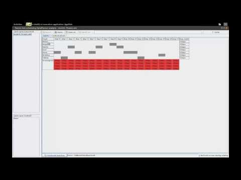

Tennis club scheduling during a Devoxx lunch
Last week, while attending Devoxx (the biggest Java conference in Europe and arguably the best in the world), I met one of my colleagues, Tobias, who recently faced a tennis club planning problem which he solved manually. He wondered if OptaPlanner could solve it too. So we decided to implement it over lunch.
The problem is relatively simple: Each week his tennis club has 2 courts available, so 4 teams can play. There are 7 teams. Teams can be unavailable on some days. The number of times each team plays must be fairly balanced. Also the number of confrontations between any 2 teams must be evenly balanced.
The challenge worked out well. In a little over an hour, we had a working implementation, which included a rudimentary GUI and the data in XML format. OptaPlanner’s solution, automatically generated in a few seconds, even improved Tobias’s manual solution which took him several evenings to find (which is – given the size of the search space – not surprising).
Apparently this problem isn’t even uncommon: later on, I found out that another colleague of mine, Cojan, also faced the same problem in his tennis club. Therefore it’s now part of the official OptaPlanner examples.
